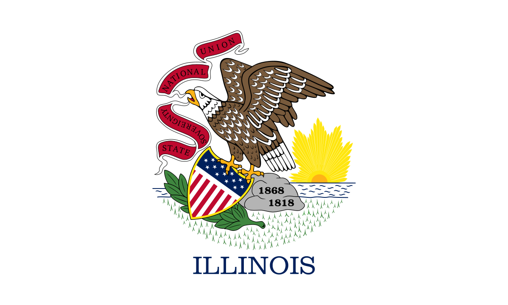
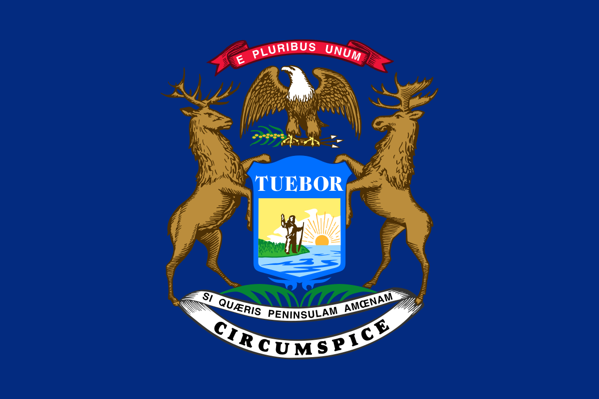
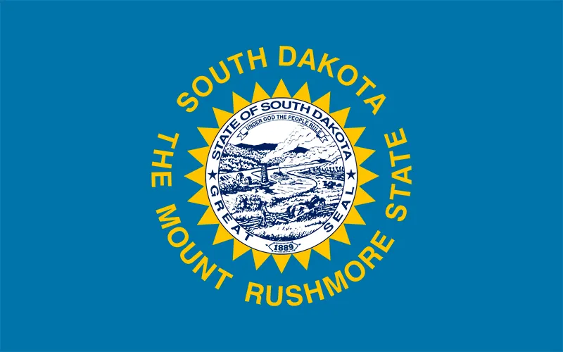

| Illinois  |
Illinois is a US state bordering Indiana in the east and the Mississippi River in the west. Nicknamed "the Prairie State," it's marked by farmland, forests, rolling hills and wetlands. Chicago, one of the largest cities in the U.S, is in the northeast on the shores of Lake Michigan. It’s famous for its skyscrapers, such as the 1,451-ft. Willis Tower and the neo-Gothic Tribune Tower. |
Some fun activities:
|
| Michigan  |
Michigan is a state in the Great Lakes region of the upper Midwestern United States. With a population of nearly 10.12 million and an area of nearly 97,000 sq mi, Michigan is the 10th-largest state by population, the 11th-largest by area, and the largest by area east of the Mississippi River. |
Some fun activities:
|
| South Dakota  |
South Dakota is an expansive, sparsely populated U.S. state where rolling prairies give way to the dramatic Black Hills National Forest. The Black Hills is home to 2 historical monuments carved into towering granite peaks: Mt. Rushmore, the iconic depiction of 4 revered U.S. presidents, and Crazy Horse Memorial, a tribute to the storied Native American tribal leader. |
Some fun activities:
|